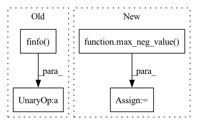

Pattern ID :42222
Before Change
mq = input_mask[:, :, None]
mk = F.pad(input_mask, (0, seq_len - mq.shape[1]), "constant", True)[:, None, :]
mask = mq * mk
masked_value = -torch.finfo(dot.dtype).max
dot.masked_fill_(~mask, masked_value)
if self.causal:
i, j = torch.triu_indices(t, t, 1)After Change
// qk attention requires tokens not attend to self
i = torch.arange(t)
dot[:, i, i] = TOKEN_SELF_ATTN_VALUE
masked_value = max_neg_value( dot)
if input_mask is not None:
mask = input_mask[:, :, None] * input_mask[:, None, :]
mask = F.pad(mask, (0, seq_len - mask.shape[-1]), "constant", True)In pattern: SUPERPATTERN
Frequency: 3
Non-data size: 4
Instances Fragment ID: 118791637
Project Name: lucidrains/reformer-pytorch
Commit Name: 6bcbb058548ac305ec39557073c4d17bb7d16b28
Time: 2020-02-06
Author: lucidrains@gmail.com
File Name: reformer_pytorch/reformer_pytorch.py
M Class Name: FullQKAttention
N Class Name: FullQKAttention
M Method Name: forward(5)
N Method Name: forward(5)
M Parent Class: nn.Module
N Parent Class: nn.Module
M File Name: reformer_pytorch/reformer_pytorch.py
N File Name: reformer_pytorch/reformer_pytorch.py
M Start Line: 365
M End Line: 376
N Start Line: 369
N End Line: 379
Before Change
if causal:
mask = torch.ones((n, n), device = device).triu(1).bool()
mask_value = -torch.finfo(sim.dtype).max
sim = sim.masked_fill(mask, mask_value)
attn = sim.softmax(dim = -1)
out = einsum("b i j, b j d -> b i d", attn, v)After Change
if exists(mask):
mask = repeat(mask, "b n -> (b g h) n", h = h, g = g)
mask = rearrange(mask, "b n -> b n ()") * rearrange(mask, "b n -> b () n")
mask_value = max_neg_value( sim)
sim = sim.masked_fill(~mask, mask_value)
if causal:
causal_mask = torch.ones((n, n), device = device).triu(1).bool() Fragment ID: 118791638
Project Name: lucidrains/multistream-transformers
Commit Name: 27d4be1d77e48956f00bc70a4d50e6baed388283
Time: 2021-07-30
Author: lucidrains@gmail.com
File Name: multistream_transformers/multistream_transformers.py
M Class Name: Attention
N Class Name: Attention
M Method Name: forward(3)
N Method Name: forward(3)
M Parent Class: nn.Module
N Parent Class: nn.Module
M File Name: multistream_transformers/multistream_transformers.py
N File Name: multistream_transformers/multistream_transformers.py
M Start Line: 99
M End Line: 104
N Start Line: 102
N End Line: 113
Before Change
sim = qk.clone()
if exists(mask):
max_neg_value = -torch.finfo(sim.dtype).max
sim.masked_fill_(~mask, max_neg_value)
attn = sim.softmax(dim = -1)
After Change
coor_weights = self.coors_mlp(coors_mlp_input)
if exists(mask):
mask_value = max_neg_value( coor_weights)
coor_mask = repeat(mask, "b () i j -> b i j ()")
coor_weights.masked_fill_(~coor_mask, mask_value)
coor_attn = coor_weights.softmax(dim = -2) Fragment ID: 118791635
Project Name: lucidrains/en-transformer
Commit Name: 3cf2206856883bba9a13ba4541510b4fe48a6628
Time: 2021-05-16
Author: lucidrains@gmail.com
File Name: en_transformer/en_transformer.py
M Class Name: EquivariantAttention
N Class Name: EquivariantAttention
M Method Name: forward(6)
N Method Name: forward(6)
M Parent Class: nn.Module
N Parent Class: nn.Module
M File Name: en_transformer/en_transformer.py
N File Name: en_transformer/en_transformer.py
M Start Line: 182
M End Line: 307
N Start Line: 189
N End Line: 325